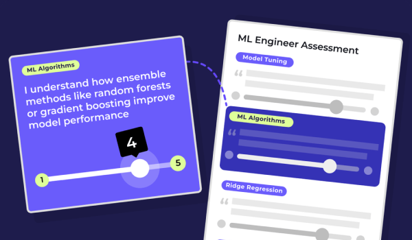
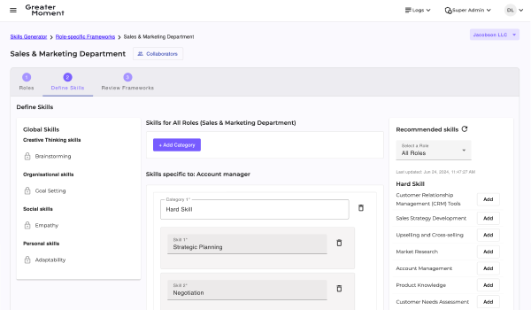
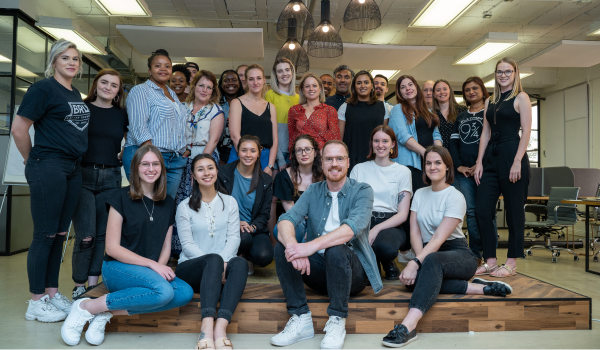
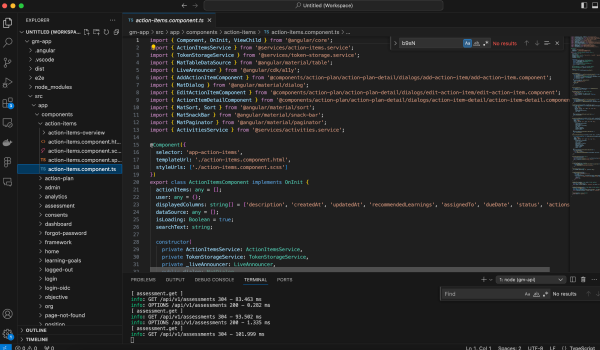

Business & Product
I co-founded Greater Moment, a B2B SaaS solution to help organisations define, measure and grow skills within the company. My role is Head of Design & Engineering.

Product Design
As Managing Director & Design lead at product design studio Bakery Digital, I was responisible for day-to-day operations & ensuring design projects met the highest standards for our customers.

Design Communities
Through Bakery Digital, I built up a community of aspiring product designers in South Africa. This community connected professionals, facilitated knowledge sharing, and supported the growth of the design industry.

Engineering
I have extensive experience in building MEAN Stack applications, including designing and building a compliant enterprise-ready web application leveraging modern APIs like ChatGPT, LangChain & Pinecone. My engineering skills compliment by approach to Product Design.